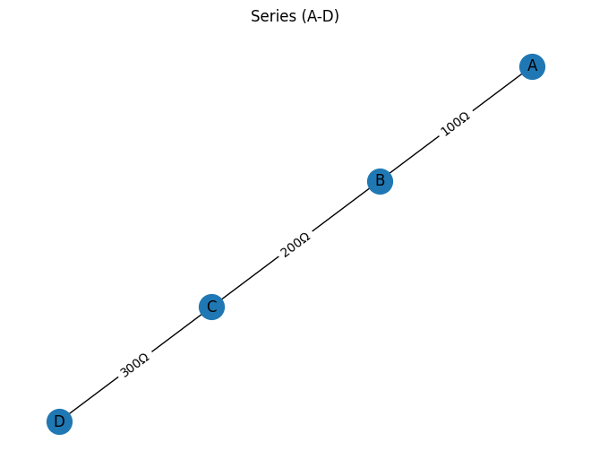
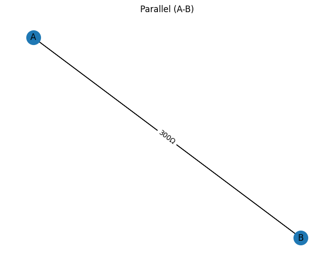
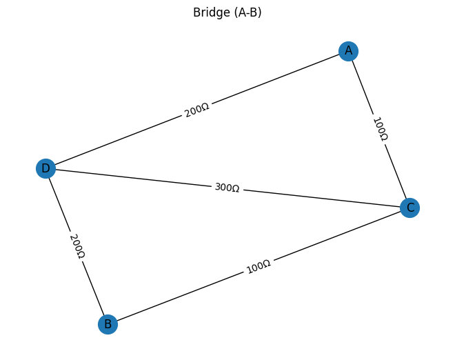
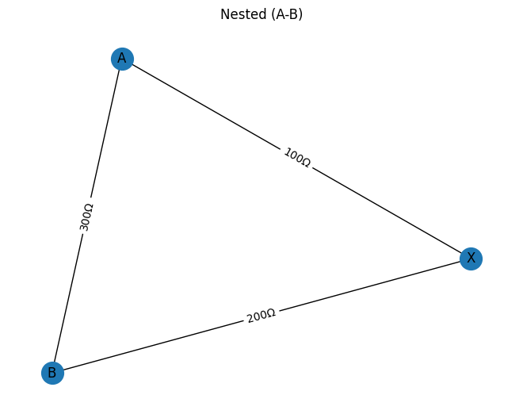

Problem 1
Equivalent Resistance Using Graph Theory
Chosen Option: Advanced Task – Full Implementation
Motivation
Calculating equivalent resistance is fundamental for analyzing electrical networks. Traditional series–parallel rules become tedious in complex circuits. By modeling the circuit as a weighted graph—nodes as junctions, edges as resistors—you can apply algorithmic reductions and, when necessary, linear‑algebraic methods to obtain the equivalent resistance automatically.
Pseudocode
FUNCTION EquivalentResistance(Graph G, terminals A, B):
# Ensure G is a MultiGraph with edge attribute ‘resistance’
MAKE a copy G₁ of G
LOOP until no more series/parallel reductions:
# Parallel reduction
FOR each pair of nodes (u, v) in G₁:
IF there are multiple edges between u and v:
COMPUTE R_eq_parallel via
$$\frac{1}{R_{\rm eq}} = \sum_i \frac{1}{R_i}$$
REMOVE all those edges
ADD single edge (u, v) with resistance R_eq_parallel
CONTINUE outer LOOP
# Series reduction
FOR each node n ≠ A, B in G₁:
IF degree(n) == 2:
LET neighbors be u and v
LET R₁ = resistance(u–n), R₂ = resistance(n–v)
SET $$R_{\rm eq}^{(\rm series)} = R_1 + R_2$$
REMOVE node n and its two edges
IF edge (u, v) exists:
# merge in parallel with R_eq_series
LET R_prev = resistance(u–v)
$$\frac{1}{R_{\rm new}} = \frac{1}{R_{\rm eq}^{(\rm series)}} + \frac{1}{R_{\rm prev}}$$
REMOVE old (u, v)
ELSE:
R_new = R_{\rm eq}^{(\rm series)}
ADD edge (u, v) with resistance R_new
CONTINUE outer LOOP
# no changes possible → exit LOOP
IF G₁ has exactly one edge connecting A and B:
RETURN its resistance
# Fallback for non‑series‑parallel networks:
BUILD Laplacian L from conductances \(g = 1/R\) for each edge
COMPUTE pseudoinverse \(L^+\)
LET i = index of A, j = index of B
RETURN $$L^+_{ii} + L^+_{jj} - 2\,L^+_{ij}$$
END FUNCTION
Handling Nested Combinations
Because the loop repeats series and parallel passes until no further reduction is possible, inner series or parallel groups are collapsed first. Once an inner group is replaced by its equivalent resistor, the next iteration will detect the new adjacent reducible pattern, ensuring nested structures like a series block inside a parallel block (or vice versa) are handled automatically.
Full Implementation (Python)
import networkx as nx
import numpy as np
import matplotlib.pyplot as plt
def EquivalentResistance(G, A, B):
"""
Compute the equivalent resistance between nodes A and B
in a resistor network G (Graph or MultiGraph with edge attribute 'resistance').
"""
# Copy the input graph into a MultiGraph
G1 = nx.MultiGraph()
G1.add_nodes_from(G.nodes())
for u, v, data in G.edges(data=True):
G1.add_edge(u, v, resistance=data['resistance'])
# Iteratively perform parallel and series reductions
while True:
reduced = False
# Parallel reduction: combine multiple edges between the same nodes
for u, v in list(G1.edges()):
if G1.number_of_edges(u, v) > 1:
data_dict = G1.get_edge_data(u, v)
resistances = [d['resistance'] for d in data_dict.values()]
Req = 1.0 / sum(1.0 / R for R in resistances)
for key in list(data_dict.keys()):
G1.remove_edge(u, v, key)
G1.add_edge(u, v, resistance=Req)
reduced = True
break
if reduced:
continue
# Series reduction: remove degree-2 nodes (not A or B)
for n in list(G1.nodes()):
if n in (A, B):
continue
if G1.degree(n) == 2:
neighbors = list(G1.adj[n])
u, v = neighbors
data_un = G1.get_edge_data(u, n)
R1 = list(data_un.values())[0]['resistance']
data_nv = G1.get_edge_data(n, v)
R2 = list(data_nv.values())[0]['resistance']
Rseries = R1 + R2
if G1.has_edge(u, v):
prev_data = G1.get_edge_data(u, v)
Rprev = 1.0 / sum(1.0 / d['resistance'] for d in prev_data.values())
for key in list(prev_data.keys()):
G1.remove_edge(u, v, key)
Rnew = 1.0 / (1.0 / Rseries + 1.0 / Rprev)
else:
Rnew = Rseries
G1.remove_node(n)
G1.add_edge(u, v, resistance=Rnew)
reduced = True
break
if not reduced:
break
# If a single edge remains between A and B, return its resistance
if G1.number_of_edges(A, B) == 1:
return float(list(G1.get_edge_data(A, B).values())[0]['resistance'])
# Fallback: use Laplacian pseudoinverse for complex topologies
H = nx.Graph()
H.add_nodes_from(G1.nodes())
for u, v, data in G1.edges(data=True):
conductance = 1.0 / data['resistance']
if H.has_edge(u, v):
H[u][v]['conductance'] += conductance
else:
H.add_edge(u, v, conductance=conductance)
nodes = list(H.nodes())
index = {node: i for i, node in enumerate(nodes)}
L = np.zeros((len(nodes), len(nodes)))
for u, v, data in H.edges(data=True):
i, j = index[u], index[v]
g = data['conductance']
L[i, i] += g
L[j, j] += g
L[i, j] -= g
L[j, i] -= g
L_plus = np.linalg.pinv(L)
i, j = index[A], index[B]
R_eff = L_plus[i, i] + L_plus[j, j] - 2 * L_plus[i, j]
return float(R_eff)
def test_and_visualize():
# Define example circuits
examples = {}
# Series circuit (A-D)
G_series = nx.MultiGraph()
G_series.add_edge('A', 'B', resistance=100)
G_series.add_edge('B', 'C', resistance=200)
G_series.add_edge('C', 'D', resistance=300)
examples['Series (A-D)'] = ('A', 'D', G_series)
# Parallel circuit (A-B)
G_parallel = nx.MultiGraph()
for r in (100, 200, 300):
G_parallel.add_edge('A', 'B', resistance=r)
examples['Parallel (A-B)'] = ('A', 'B', G_parallel)
# Bridge circuit (A-B)
G_bridge = nx.MultiGraph()
edges = [
('A', 'C', 100), ('C', 'B', 100),
('A', 'D', 200), ('D', 'B', 200),
('C', 'D', 300)
]
for u, v, r in edges:
G_bridge.add_edge(u, v, resistance=r)
examples['Bridge (A-B)'] = ('A', 'B', G_bridge)
# Nested circuit (A-B)
G_nested = nx.MultiGraph()
G_nested.add_edge('A', 'X', resistance=100)
G_nested.add_edge('X', 'B', resistance=200)
G_nested.add_edge('A', 'B', resistance=300)
examples['Nested (A-B)'] = ('A', 'B', G_nested)
# Calculate and print results
print("Equivalent Resistances:")
results = {}
for name, (A, B, graph) in examples.items():
R = EquivalentResistance(graph, A, B)
results[name] = R
print(f" {name}: {R:.2f} Ω")
# Optional: draw circuit diagrams
for name, (_, _, graph) in examples.items():
plt.figure()
pos = nx.spring_layout(graph, seed=42)
nx.draw(graph, pos, with_labels=True, node_size=400)
edge_labels = {(u, v): f"{d['resistance']}Ω"
for u, v, d in graph.edges(data=True)}
nx.draw_networkx_edge_labels(graph, pos, edge_labels=edge_labels)
plt.title(name)
plt.axis('off')
plt.show()
# Render console output as an image file
output_text = "Equivalent Resistances:\n" + "\n".join(
f" {name}: {results[name]:.2f} Ω" for name in results
)
fig, ax = plt.subplots(figsize=(6, 0.5 + 0.3 * len(results)))
ax.axis('off')
ax.text(0, 0.5, output_text, fontsize=12, family='monospace')
fig.savefig("equivalent_resistance_output.png", bbox_inches="tight")
print("\nSaved output image: equivalent_resistance_output.png")
if __name__ == "__main__":
test_and_visualize()
Demonstration on Four Examples
-
Simple Series
Three resistors \(100\), \(200\), \(300\)\,Ω in series between A and D yield
$$ R_{\rm eq} = 100 + 200 + 300 = 600\ \Omega. $$ -
Simple Parallel
Three resistors \(100\), \(200\), \(300\)\,Ω in parallel between A and B yield
$$ \frac{1}{R_{\rm eq}} = \frac{1}{100} + \frac{1}{200} + \frac{1}{300} \quad\Longrightarrow\quad R_{\rm eq} \approx 54.55\ \Omega. $$ -
Bridge Circuit
Resistors A–C:100Ω, C–B:100Ω, A–D:200Ω, D–B:200Ω, C–D:300Ω. The series–parallel pass leaves a non‑reducible bridge, so the Laplacian method gives
$$ R_{\rm eq} \approx 133.33\ \Omega. $$ -
Nested Combination
A series block of 100Ω and 200Ω between A and B, in parallel with 300Ω, yields:
$$ R_{\rm series} = 100 + 200 = 300\ \Omega,\quad \frac{1}{R_{\rm eq}} = \frac{1}{300} + \frac{1}{300} \quad\Longrightarrow\quad R_{\rm eq} = 150\ \Omega. $$
Efficiency Analysis & Potential Improvements
- Time Complexity
- Series/parallel reduction: each pass inspects \(O(E)\) edges and \(O(N)\) nodes; worst‑case \(O(E^2)\) if many small reductions occur.
-
Pseudoinverse fallback: dense matrix inversion of size \(n\) costs \(O(n^3)\).
-
Space Complexity
- Graph storage: \(O(N + E)\).
-
Laplacian matrix: \(O(n^2)\).
-
Potential Improvements
- Pattern‑matching acceleration: Use a queue of recently modified nodes/edges to avoid full scans each iteration.
- Sparse linear algebra: For large graphs, represent the Laplacian as a sparse matrix and use iterative solvers (e.g.\ conjugate‑gradient) instead of dense pseudoinverse.
- Δ–Y (star–delta) transforms: Extend reduction capability beyond series–parallel to handle more topologies directly.
PYTHON OUTPUT




